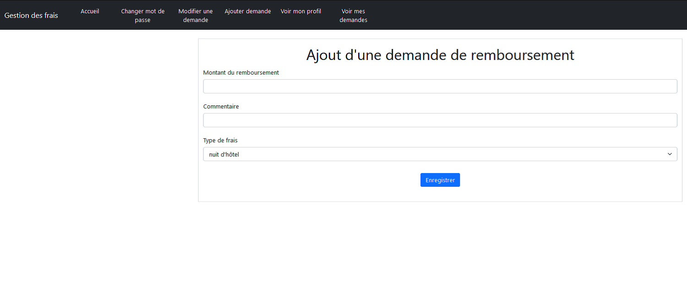

Projet GSB : Demandes de Remboursement

Formulaire de connexion

Page d'accueil

Ajout d'une demande de remboursement

Modification d'une demande

Consultation des demandes de l'utilisateur
Compétences mises en œuvre
- 1 - Gérer le patrimoine informatique
- 2 - Répondre aux incidents et aux demandes d’assistance et d’évolution
- 3 - Développer la présence en ligne de l’organisation
- 4 - Travailler en mode projet
Détails
- Catégorie : Application Web
- Langages : HTML, CSS, PHP
- Outils : VS Code, PhpMyAdmin (WampServer), GitHub
Contexte du Projet
Le groupe pharmaceutique GSB désire contrôler davantage l'origine des frais de remboursement des déplacements de ses employés.
De plus, GSB désire gérer séparement les demandes de remboursement liées :
- aux déplacements chez les médécins pour présenter des produits;
- aux participations à des congrès;
- aux participations à des formations obligatoires;